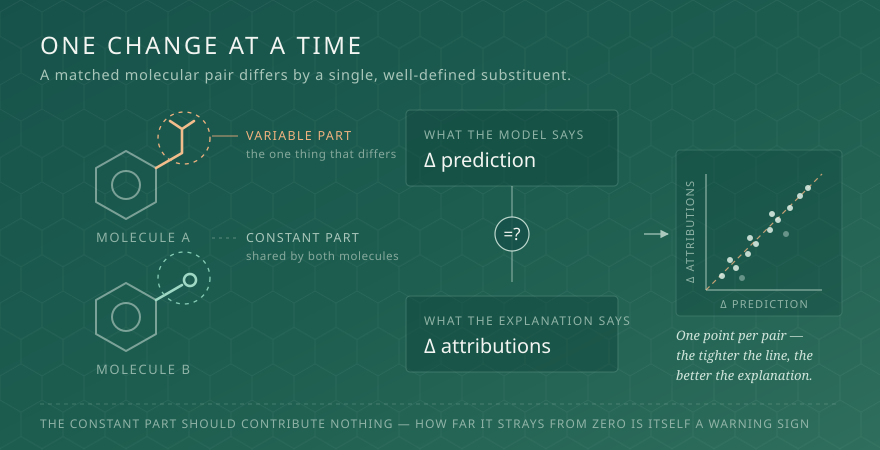
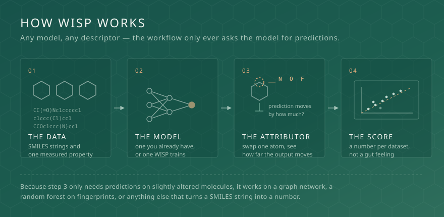
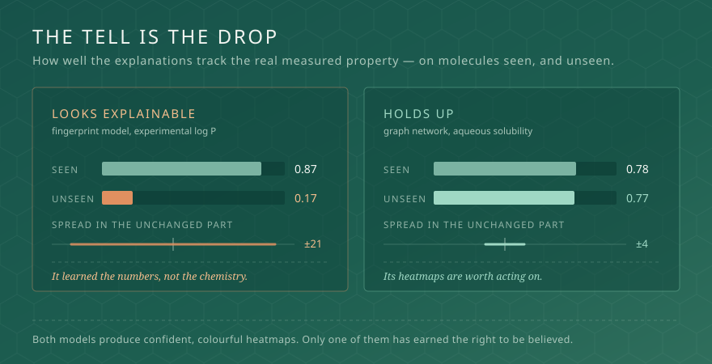

Story 01 · Explainable AI
Explainable AI for Molecules: The WISP Framework
Explainable AI for molecules grows out of a straightforward wish: to make the predictions of a machine learning model transparent to the person who has to rely on them. Colleagues at Bayer built a tool for exactly that need — CIME, the ChemInformatics Model Explorer.
In practice, this means: a machine learning model predicts that your compound is too lipophilic. Alongside the number comes a picture — the molecule, with its atoms washed in red and blue, showing which parts pushed the prediction up and which pulled it down. It is a persuasive image. A chemist can act on it: swap that group, keep this ring. But the picture carries no error bar, and nothing about it tells you whether the model was reasoning about chemistry or about a coincidence in its training data.
That gap is the subject of two papers I worked on with Kerrin Janssen, Jonny Proppe and Andreas Göller, published in Digital Discovery earlier this year. They introduce WISP — a Workflow for Interpretability Scoring using matched molecular Pairs — which turns the question "can I trust this heatmap?" from a matter of taste into a measurement.
One change at a time
The idea rests on an old trick from medicinal chemistry. A matched molecular pair is two molecules that are identical except for one well-defined piece: a chlorine where the other has a methyl group, a hydroxyl where the other has nothing. Chemists like such pairs because any difference in measured behaviour can be pinned on the one thing that changed.
That same property makes them a test for explanations. Take the atom-level attributions the explainability method produced, and add up only those sitting on the part that changed. If the explanation is doing its job, that sum should move in step with how much the model's prediction moved between the two molecules. Plot one point per pair, and the scatter tells you how tightly the explanation tracks the model.

The unchanged part is just as informative. In principle it should contribute nothing to the difference — it is, after all, the same atoms in the same arrangement. In practice it never quite does, and the width of that spread turns out to be a reliable smell test. The papers suggest a working rule of thumb: once the standard deviation in the constant part climbs to around 5 or above, treat the heatmaps with suspicion.
A workflow that doesn't care what your model is
For this to be useful it has to work on whatever model someone actually has. WISP's answer is an atom attributor that never looks inside the model at all. It takes an atom, substitutes other elements in its place, asks the model to predict the mutated molecule, and records how far the answer moved. Average that over the valid substitutions and you have that atom's attribution — roughly 324 extra predictions for a typical 27-atom molecule.
Because it only ever asks the model for predictions on slightly altered SMILES strings, it works equally on a directed message-passing graph network, a random forest over fingerprints, or anything else that maps a molecule to a number. WISP also wraps the two attribution methods people already use — RDKit's similarity maps and SHAP — so they can be scored side by side on the same data.

The uncomfortable finding
Once you can score explanations, you can ask which models deserve them — and the answer is sobering. Explanation quality turns out to be tied to model quality much more tightly than anyone's intuition suggests, and the diagnostic sits in a place most people never look: the gap between the molecules the model trained on and the ones it has never seen.
A support-vector model of experimental log P makes the point. Across whole molecules its attributions track its own predictions almost perfectly, r² = 0.96, which looks like a resounding success. Ask instead how well those attributions track the measured log P, and the training molecules score 0.87 while the held-out molecules score 0.17. The explanation had been describing the model's habits, not the chemistry. Swapping in a graph network on the same data cut the spread in the unchanged part from ±21 to ±5.

A drop in explainability on held-out data is not a problem with the explanation. It is the model telling you it never learned the chemistry.
What happens on real problems
The second paper takes WISP to the tasks people actually care about, and the results are a mixed, honest picture. On Factor Xa binding affinities all three attribution methods behave sensibly, and the heatmaps correctly single out a bromine-for-iodine swap that an earlier published method had missed. On reaction yields the whole-molecule score of 0.92 collapses to 0.25 against the measured yields — the model had found numerical structure in a combinatorial dataset rather than chemistry.
The starkest case is Ames mutagenicity. The classifier is accurate — 80% — and would pass any ordinary review. But its explanations refuse to settle on the aliphatic halides and aromatic amines that are textbook mutagenic motifs, scattering attribution across the unchanged parts instead. A model can be right for the wrong reasons, and without something like WISP you would never know.
- 8model-and-dataset experiments scored across both papers
- 2of them explain unseen molecules well enough to act on
- 0.95best sign accuracy, on aqueous solubility
- ±5spread in the constant part, above which heatmaps need caution
Two of eight is a modest-sounding result, and it is the most important number in either paper. Explaining predictions on molecules a model has already seen is a solved-enough problem; explaining predictions on new ones, which is the only case that matters for design, mostly is not yet. Knowing which of your models falls on which side of that line is what WISP actually buys you.